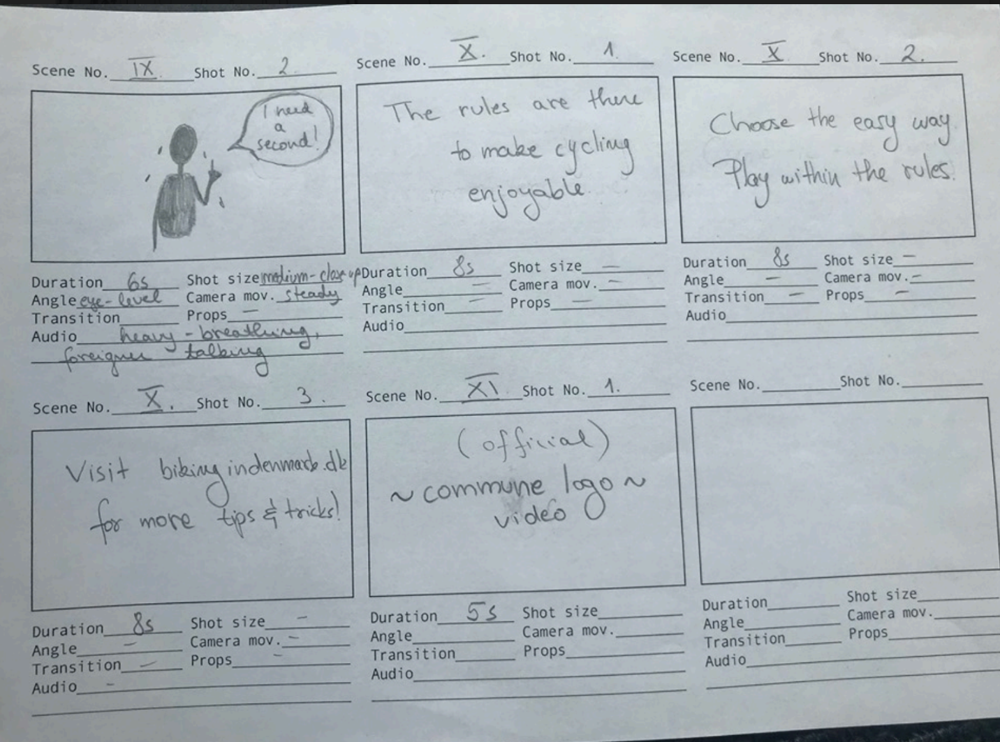
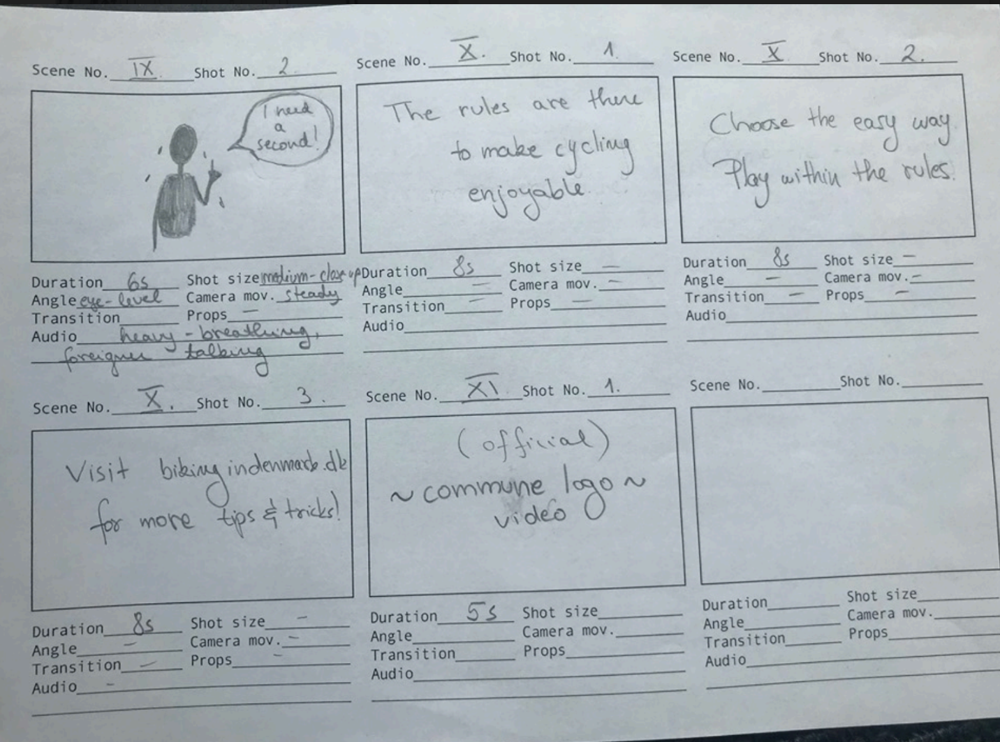
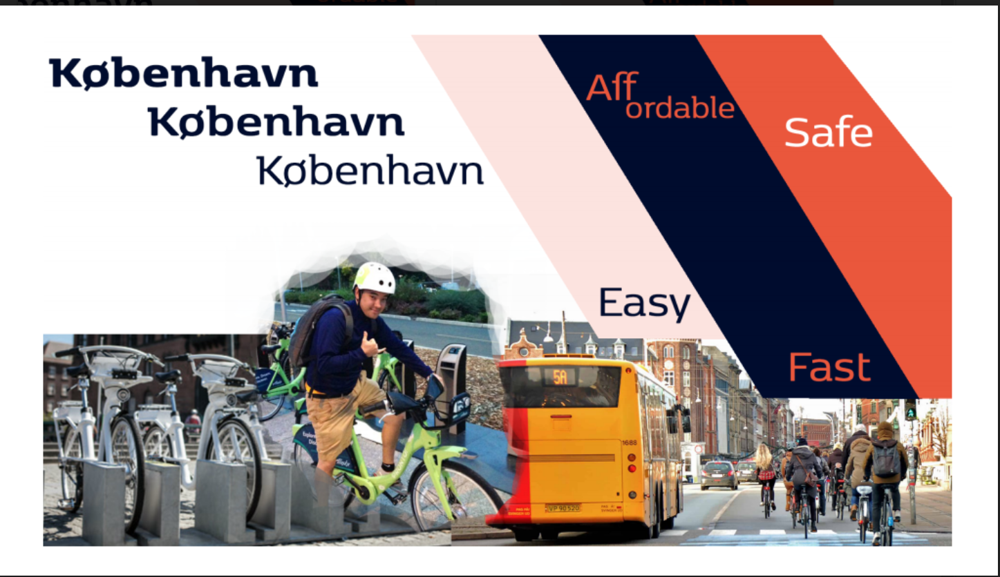

In this theme, for our group project we was tasked with creating an informational brochure based on cycling in Copenhagen for a specific target group. The target group we decided too pick was young tourists visiting Copenhagen. The reason we decided to focus on this group was simply most of our team was inexperienced cyclers, especially in Copenhagen. We felt the natural learning journey we would undertake would present natural opportunity to be most informative in our brochure.
We created a team canvas to align our goals, ambitions, interests and desired roles. In the people and roles section right at the top, you can see my name and role which is closest to a ponytail.
As part of our task, we were tasked with creating a video guide as part of our brochure. In our storyboard you can see we considered things such as the duration-length, shot angle and size, camera movement whether or not there are transition, props and/or audio. We considered the language and what we were going to communicate to the viewer when doing the storyboard, and we decided to stick to an advert styled, story of a local and a tourist who just landed. The focus of the story is on their journey to a specified park in Copenhagen, both of them using cycling as a means of transport. The local has a relatively easy time as they know how cycling in Copenhagen is, on the other hand the tourist does not necessarily know what cycling in Copenhagen is like. The tourist has a tough time as he breaks rules and actually arrives later than the local. The idea of the story is to illustrate how knowing the rules and following them can actually cycling in Copenhagen. The shots are dynamic, changing consistently back and forth between the characters to compare their journeys.
 

Below you can see the moodboard you can see we decided to hone on mood that was informative and felt affordable, safe and easily available. We wanted the end user to feel all these qualities, whilst still using the design guide provided.
The moodboard then fuelled a more technical style tile that is heavily influenced by the style guide provided.
 Link to prototype.
Link to prototype.